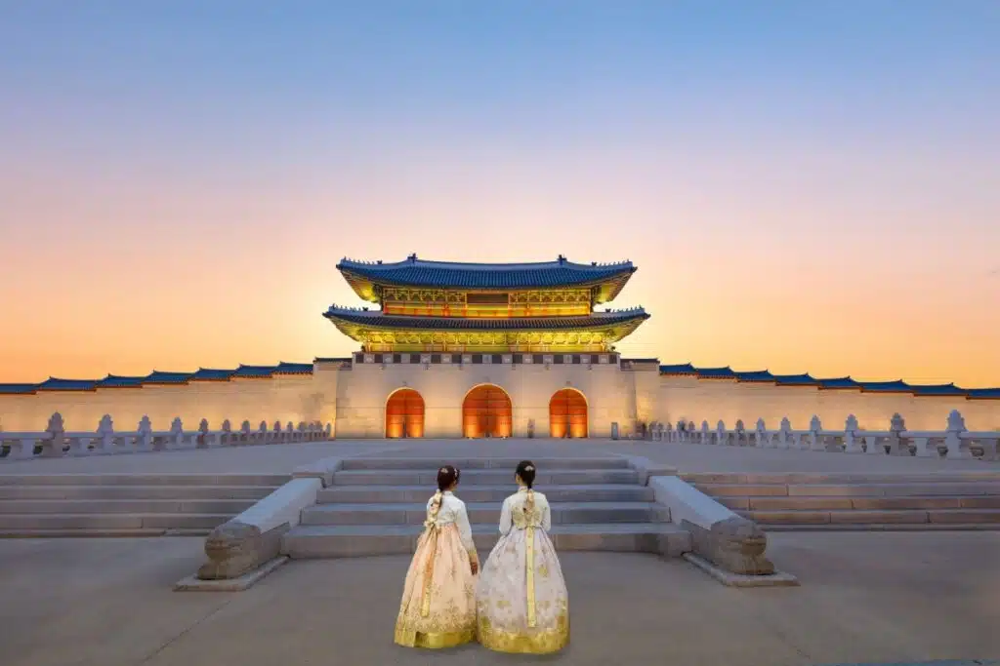

O turismo na Coreia do Sul atrai visitantes por sua combinação de tradição e modernidade.
O país oferece grandes cidades, como Seul, com tecnologia avançada, centros comerciais e vida cultural intensa, além de palácios históricos, templos e vilas tradicionais.
A culinária, os K-dramas, o K-pop e a beleza natural de regiões como a Ilha de Jeju também são importantes atrações turísticas.
Assim, a Coreia do Sul se destaca como um destino que une história, cultura, entretenimento e inovação.
Palácio Gyeongbokgung
Algumas informações:
Palácio Gyeongbokgung
O Palácio Gyeongbokgung é um dos mais importantes e famosos palácios da Coreia do Sul. Localizado em Seul, foi construído durante a Dinastia Joseon e serviu como residência real e centro administrativo do governo. Atualmente, é uma das principais atrações turísticas do país, conhecido por sua arquitetura tradicional, jardins, portões monumentais e pela cerimônia de troca da guarda. O palácio representa a história, a cultura e o patrimônio da Coreia do Sul, atraindo visitantes de todo o mundo.

Figura 1 - Palácio Gyeongbokgung
Monte_Hallasan
Algumas informações:
Monte_Hallasan
O Monte Hallasan é a montanha mais alta da Coreia do Sul e está localizado na Ilha de Jeju. Trata-se de um vulcão extinto cercado por um parque nacional, famoso por suas belas paisagens, trilhas para caminhada e rica biodiversidade. O local é uma das principais atrações turísticas do país, atraindo visitantes interessados em natureza, aventura e contemplação de vistas panorâmicas.